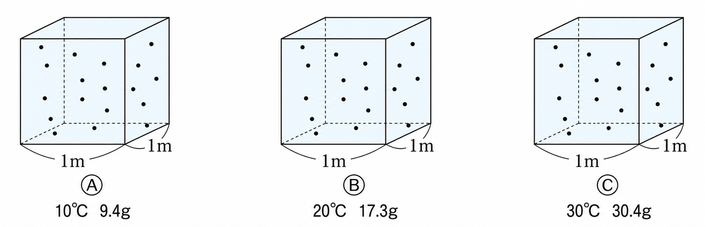
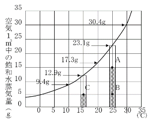
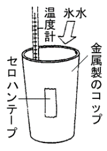
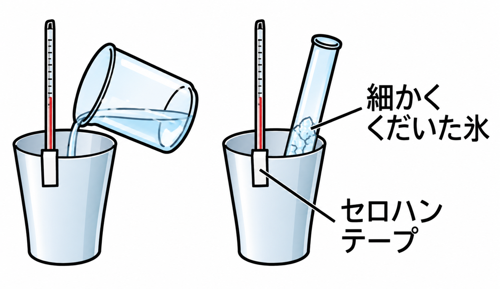
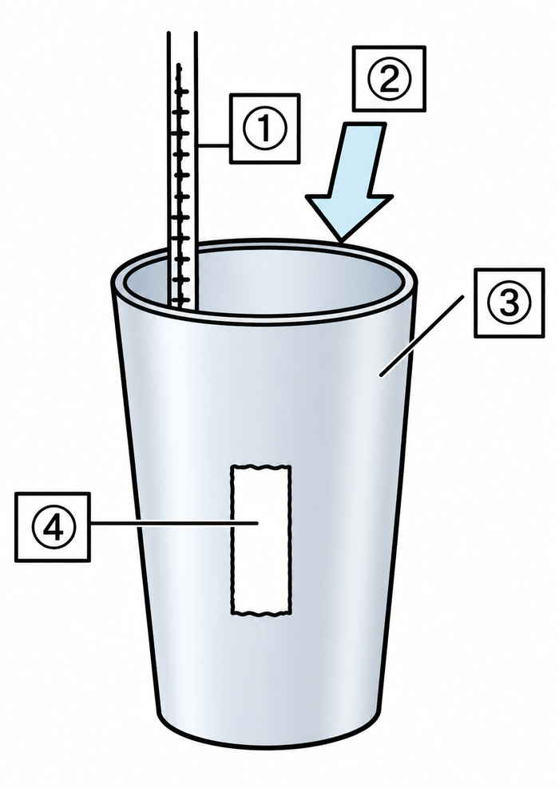
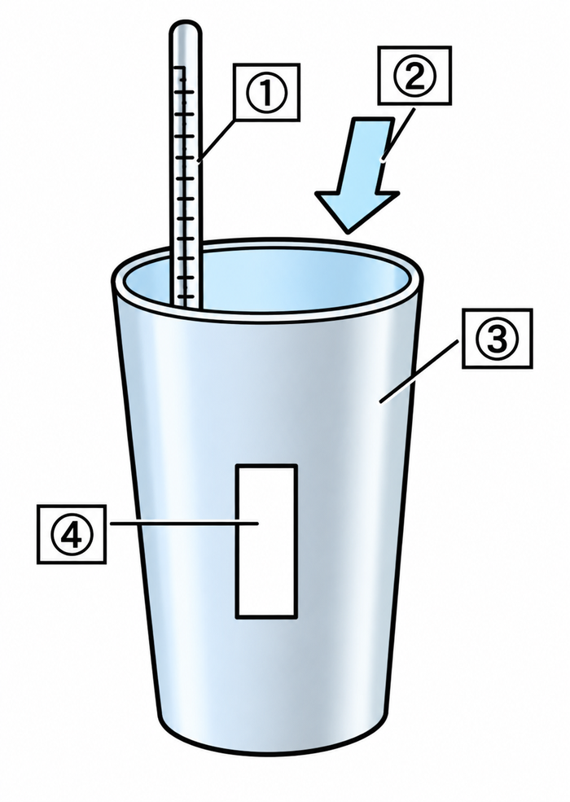
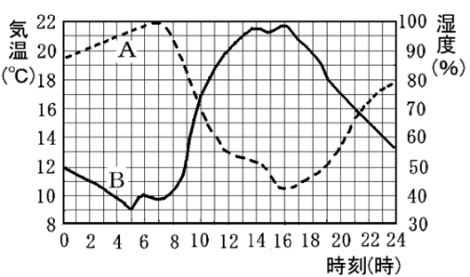
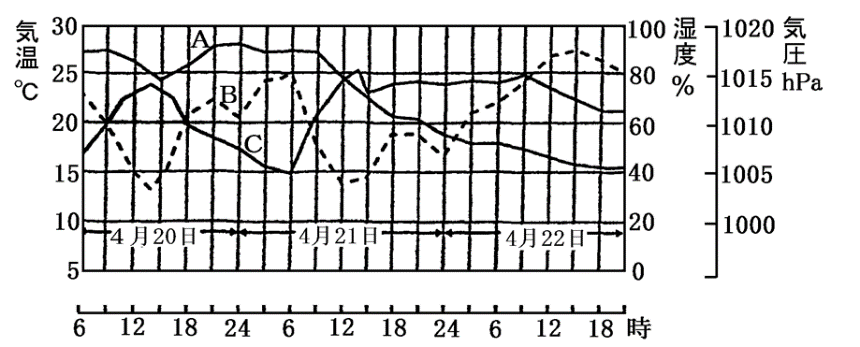
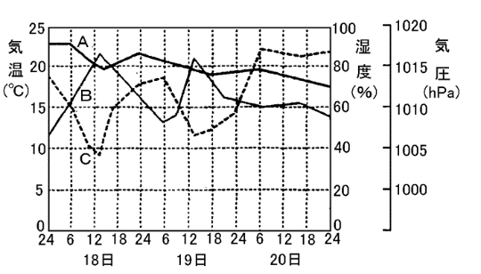

飽和水蒸気量・湿度・露点
空気1m³にふくむことのできる水蒸気の量には、限りがあります。この限度の量を飽和水蒸気量といいます。
気温が高いほど、飽和水蒸気量は大きくなります。

| 気温(℃) | 0 | 5 | 10 | 15 | 20 | 25 | 30 | 35 |
|---|---|---|---|---|---|---|---|---|
| 飽和水蒸気量(g/m³) | 4.8 | 6.8 | 9.4 | 12.8 | 17.3 | 23.1 | 30.4 | 39.6 |

空気1m³にふくむことのできる水蒸気の限度の量を①といいます。気温が高いほど②です。
湿度は、その空気がふくむ水蒸気の量が、飽和水蒸気量の何%にあたるかを表したものです。
湿度＝水蒸気量÷①×②で求めます。
空気を冷やしていくと、やがて水蒸気が水てきになりはじめます。この温度を露点といいます。
露点では、空気にふくまれる水蒸気の量が、その温度の飽和水蒸気量とちょうど等しく（湿度100%）なっています。


空気を冷やして水蒸気が水てきになりはじめる温度を①といいます。そのとき湿度は②%です。

図の ① ② ③ ④ に入る名前を、順に選びます。

空気にふくまれる水蒸気量が分かれば、それが飽和水蒸気量になる温度を表から探すと露点が分かります。
水蒸気量が①ほど露点は高くなります。冷やした温度が露点より②と水てきができます。
晴れた日の1日の変化を見ると、気温が上がると湿度は下がり、気温が下がると湿度は上がります。
これは、1日のうち水蒸気量がほぼ同じでも、気温が上がると飽和水蒸気量が大きくなるからです。



晴れた日、気温が上がると湿度は①、気温が下がると湿度は②。